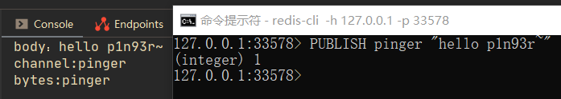
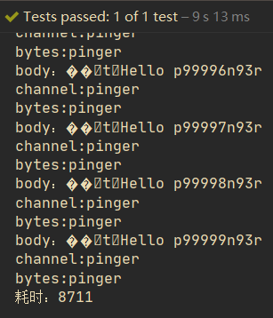
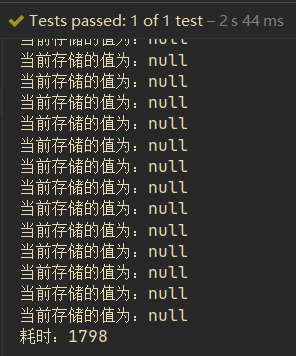

SpringBoot操作Redis

文章目录
Redis介绍
Redis是一个开源的、高性能key-value数据结构存储，可以用来作为 数据库、缓存和消息队列。 以下是Redis的特点：
- Redis支持数据的持久化，可以将内存中的数据保存在磁盘中，重启的时候可以再次加载到内存使用。
- Redis不仅支持简单的key-value类型的数据，同时还提供list，set，zset，hash等数据结构的存储。
- Redis支持主从复制，即master-slave模式的数据备份。
- Redis将所有数据集存储在内存中，可以在入门级Linux机器中每秒写（SET）11万次，读（GET）8.1万次。Redis支持Pipelining命令，可一次发送多条命令来提高吞吐率，减少通信延迟。
windows下安装Redis的教程：windows安装Redis
SpringBoot整合Redis
添加依赖
在模块的pom文件中添加如下依赖：
1 2 3 4 5 6 7 8 9 10 11 12 13 14 15 16 17 |
<!--引入redis，不使用其默认客户端-->
<dependency>
<groupId>org.springframework.boot</groupId>
<artifactId>spring-boot-starter-data-redis</artifactId>
<exclusions>
<exclusion>
<groupId>io.lettuce</groupId>
<artifactId>lettuce-core</artifactId>
</exclusion>
</exclusions>
</dependency>
<!--使用jedis客户端-->
<dependency>
<groupId>redis.clients</groupId>
<artifactId>jedis</artifactId>
</dependency> |
编写配置文件
在模块下的application.properties文件(或者其他的能够加载的配置文件)中编写如下配置文件（我修改了Redis的默认端口为33578）：
1 2 3 4 5 6 7 8 9 10 11 12 13 14 15 16 17 18 19 20 21 22 23 24 25 |
#***********************************Redis配置************************************ spring.redis.host=127.0.0.1 spring.redis.port=33578 # Redis 数据库索引（默认为 0） spring.redis.database=0 # Redis 服务器连接端口 # Redis 服务器连接密码（默认为空） spring.redis.password= #连接池最大连接数（使用负值表示没有限制） spring.redis.jedis.pool.max-active=100 # 连接池最大阻塞等待时间（使用负值表示没有限制） spring.redis.jedis.pool.max-wait=2000 # 连接池中的最大空闲连接 spring.redis.jedis.pool.max-idle=20 # 连接池中的最小空闲连接 spring.redis.jedis.pool.min-idle=10 #*******************************Redis缓存管理************************************** spring.cache.type=REDIS spring.cache.cache-names=redisCache spring.cache.redis.cache-null-values=false spring.cache.redis.key-prefix= spring.cache.redis.use-key-prefix=true spring.cache.redis.time-to-live=0ms |
使用Redis
使用Redis的发布与订阅
主要创建Redis的监听容器以及消息监听器，然后在容器中添加消息监听，代码如下：
1 2 3 4 5 6 7 8 9 10 11 12 13 14 15 16 17 18 19 20 21 22 23 24 25 26 27 28 29 30 31 32 33 34 35 36 37 38 39 40 41 42 43 44 45 46 47 48 49 50 |
@Order(-1)
@Configuration
public class RedisConfig {
private ThreadPoolTaskScheduler scheduler;
/**
* 监听器：观察者
*/
@Autowired
private RedisMsgListener listener;
@Autowired
private RedisConnectionFactory connectionFactory;
@Autowired
private RedisTemplate redisTemplate;
/**
* 创建任务池
*/
@Bean
public ThreadPoolTaskScheduler initScheduler(){
if(this.scheduler!=null){
return this.scheduler;
}
ThreadPoolTaskScheduler taskScheduler = new ThreadPoolTaskScheduler();
taskScheduler.setPoolSize(100);
taskScheduler.setAwaitTerminationMillis(2000);
this.scheduler=taskScheduler;
return this.scheduler;
}
/**
* 定义Redis的监听容器
*/
@Bean
public RedisMessageListenerContainer initListenerContainer(){
RedisMessageListenerContainer container = new RedisMessageListenerContainer();
container.setConnectionFactory(connectionFactory);
container.setTaskExecutor(scheduler);
//创建一个通道：pinger
ChannelTopic topic = new ChannelTopic("pinger");
//订阅
container.addMessageListener(listener,topic);
return container;
}
} |
消息监听器代码如下：
1 2 3 4 5 6 7 8 9 10 11 12 |
@Order(-2)
@Component
public class RedisMsgListener implements MessageListener {
@Override
public void onMessage(Message message, byte[] bytes) {
byte[] body = message.getBody();
byte[] channel = message.getChannel();
System.out.println("body："+new String(body));
System.out.println("channel:"+new String(channel));
System.out.println("bytes:"+new String(bytes));
}
} |
测试结果如下：

测试10万条消息发布与订阅的耗时，测试代码如下：
1 2 3 4 5 6 7 8 9 |
@Test
public void test5(){
long start = System.currentTimeMillis();
for(int i=0;i<100000;i++){
template.convertAndSend("pinger","Hello p"+i+"n93r");
}
long end = System.currentTimeMillis();
System.out.println("耗时："+(end-start));
} |
测试结果如下：

自定义RedisTemplate的序列化器
在RedisConfig配置类中编写如下代码：
1 2 3 4 5 6 7 8 9 10 11 12 13 |
@PostConstruct
private void init(){
initRedisTemplate();
}
/**
* 初始化RedisTemplate，设置key、HashKey的序列化器为StringSerializer
*/
private void initRedisTemplate() {
RedisSerializer stringSerializer = redisTemplate.getStringSerializer();
redisTemplate.setKeySerializer(stringSerializer);
redisTemplate.setHashKeySerializer(stringSerializer);
} |
使用Redis读写数据
测试代码如下：
1 2 3 4 5 6 7 8 9 10 11 12 13 14 15 16 17 18 |
@Test
public void test4(){
long start = System.currentTimeMillis();
List list =(List) template.executePipelined(new SessionCallback<String>() {
@Override
public <K, V> String execute(RedisOperations<K, V> redisOperations) throws DataAccessException {
//测试十万条数据
for (int i = 0; i < 100000; i++) {
redisOperations.opsForValue().set((K) ("pipline_" + i), (V) ("value_" + i));
V currentVal = redisOperations.opsForValue().get("pipline_" + i);
System.out.println("当前存储的值为："+currentVal);
}
return null;
}
});
long end = System.currentTimeMillis();
System.out.println("耗时："+(end-start));
} |
测试结果如下（10万条数据耗时不到2秒）：

Notice: 测试结果中显示查询的值都是null，是因为使用了流水线，所有的命令都只是进入了队列而没有执行，所以执行的命令返回值为空。
使用Spring缓存注解
Spring的缓存注解如下：
- @Cacheable：先从缓存中通过定义的键查询，如果可以查询到数据，则返回，否则执行该方法，返回数据并将结果保存到缓存中。
- @CachePut：将方法结果返回存放到缓存当中。
- @CacheEvict：通过定义的键移除缓存，有一个配置项：beforeInvocation，表示是否在方法之前移除缓存，true表示是的，反之亦反。
一个代码示例如下：
1 2 3 4 5 6 7 8 9 10 11 12 13 14 15 16 17 18 19 20 21 22 23 24 25 26 27 28 29 30 31 32 33 34 35 |
@Service
public class UserServiceImpl extends ServiceImpl<UserMapper, User> implements IUserService {
/**
* 从缓存中读取user
*/
@Override
@Transactional
//此处的unless：如果查询的结果为null，则不进行缓存
@Cacheable(value = "redisCache",unless = "#result==null",key = "'user_id_'+#id")
public User getUser(Integer id){
return this.baseMapper.selectById(id);
}
/**
* 缓存插入的数据
*/
@Override
@CachePut(value = "redisCache",condition = "#result!=null",key = "'user_id_'+#result.id")
@Transactional
public User addUser(User user){
int insert = this.baseMapper.insert(user);
return insert>0? user:null;
}
/**
* 移除缓存
*/
@Override
@CacheEvict(value = "redisCache",condition = "#result!=0",key = "'user_id_'+#id",beforeInvocation = false)
@Transactional
public int delUser(Integer id){
return this.baseMapper.deleteById(id);
}
} |
Notice: 如果类内方法相互调用，则会导致方法不走AOP代理，会使得@Transaction和@Cacheable等注解失效。此外 @Cacheable(value="redisCache",condition="#result==null",key = "'user_id_'+#id") 中的condition表示从缓存中查询的result为空时才启用缓存。
文章作者 P1n93r
上次更新 2020-09-08